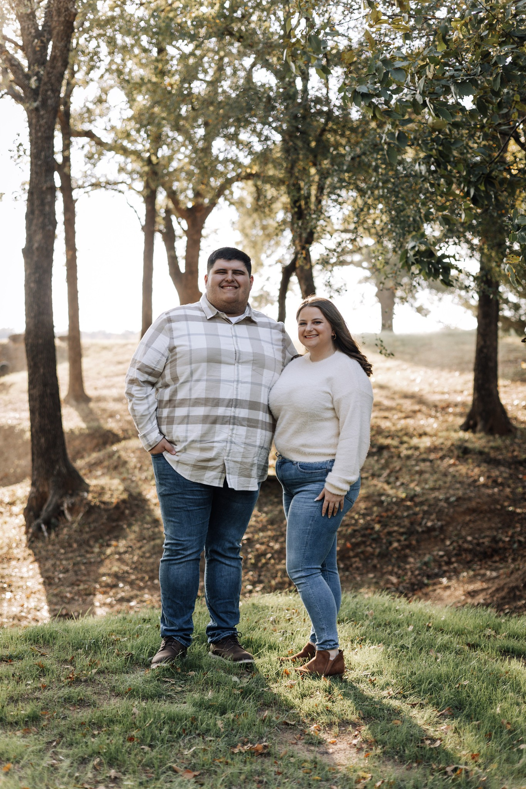

Gage's Bio
Welcome to my official biography!
My social media links:
Steam games that I have played the most:
| Game Name | Year of Release | Hours Played |
|---|---|---|
| Counter-Strike: Global Offensive | 2012 | 1,642 |
| Hearts of Iron IV | 2016 | 180 |
| Motorsport Manager | 2016 | 172 |
About Me:
I was born in 1999 in Arlington, Texas. I played football for 9 years of my childhood but was forced to stop due to concussions. I went to the same high school as Tay-K. I graduated with a BBA in Information Systems from the University of Texas at Arlington in May 2022.
During my time at UTA, I represented their Esports team in both CS:GO and iRacing, becoming the first sim racer UTA Esports had ever had. During my time there, I got to play in a showmatch before a pro event at the Esports Stadium in Arlington. Additionally, I also got to race against NASCAR drivers in a students vs pros tournament.